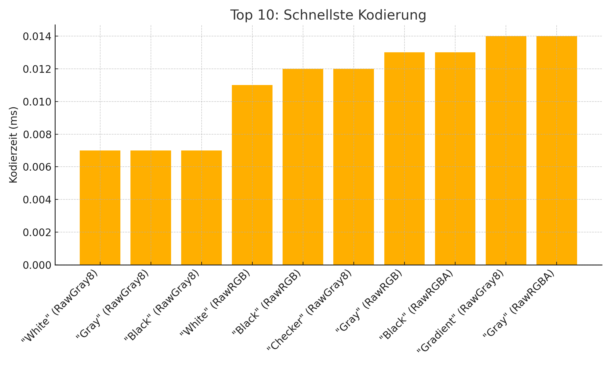
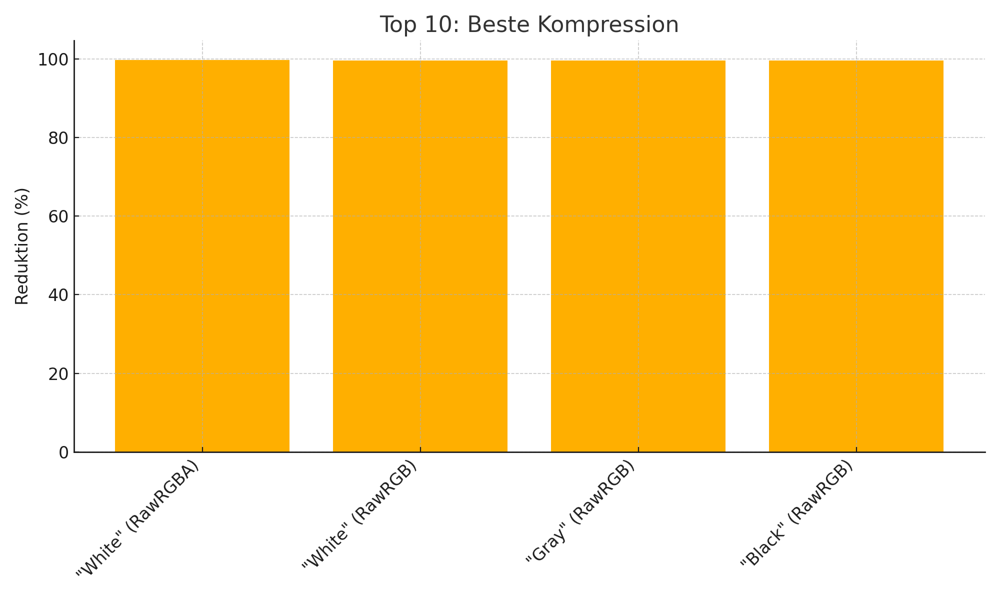

CRIC Codec
CRIC ist ein verlustfreier, ultraschneller Bild- und Videocodec – optimiert für Graustufen, einfache Farbdaten und Streaming-Anwendungen.
🔧 Dateiformate
.cig – CRIC Image Format (Einzelbilder).cgv – CRIC Gray Video Format (Videos / Streams)
🚀 Vorteile
- 100 % verlustfrei
- Lineare Verarbeitungsgeschwindigkeit (O(n))
- Ideal für Kamerastreams, Embedded Vision, Low-Latency-Systeme
- Kein Entropie-Overhead, keine Huffman-Tabellen
📥 Download
CRIC Encoder/Decoder herunterladen
📄 Dokumentation
Technische Details findest du hier: spec.md
💰 Unterstützen
Hilf mit, dieses Projekt weiterzuentwickeln:
Jetzt via PayPal spenden
📊 Benchmarks
Top 10 – Schnellste Kodierung

Top 10 – Beste Kompression

Alle Testfälle